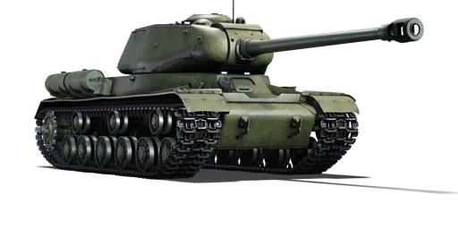
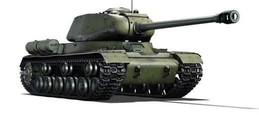

O IS-2 é a segunda variante de primeira geração da família de tanques pesados IS. Com a chegada dos Panthers e Tiger I do lado alemão, a escalada entre os engenheiros alemães e soviéticos atingiu um novo nível, e o IS-2 foi forçado a entrar em serviço assim que seu armamento principal ficou pronto. O novo tanque pesado era a resposta soviética aos tanques alemães cada vez mais superiores, com uma placa de blindagem frontal do casco parcialmente inclinada e um novo e enorme canhão de 122 mm D-25T.
No entanto, o projeto do IS-2 provaria ter várias falhas a longo prazo, começando pelo próprio canhão, que era difícil de recarregar e utilizava munição naval pesada em duas peças. A característica mais inovadora tanto do IS-1 quanto da primeira geração do IS-2 era o novo design do casco frontal, que ainda era inclinado, mas de forma uniformemente “fundida”, com uma placa de blindagem de 120 mm inclinada a 30° e uma de 60 mm inclinada a 72°, oferecendo proteção aprimorada sem aumentar o peso.
Como resultado, o casco frontal podia agora resistir a um projétil perfurante de blindagem alemão de 88 mm a 1.000 metros. O espaço interno era restrito por causa do enorme mecanismo de recuo do canhão e do pequeno diâmetro do anel da torre, de 1.800 mm, permitindo apenas uma tripulação de quatro homens, com o comandante acumulando as funções de comandar, ordenar o fogo e manter contato por rádio. A maior parte da produção começou em fevereiro de 1944, com cerca de 2.252 unidades fornecidas até o final do ano.